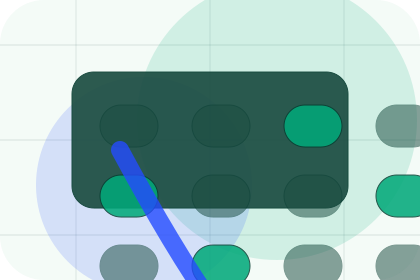
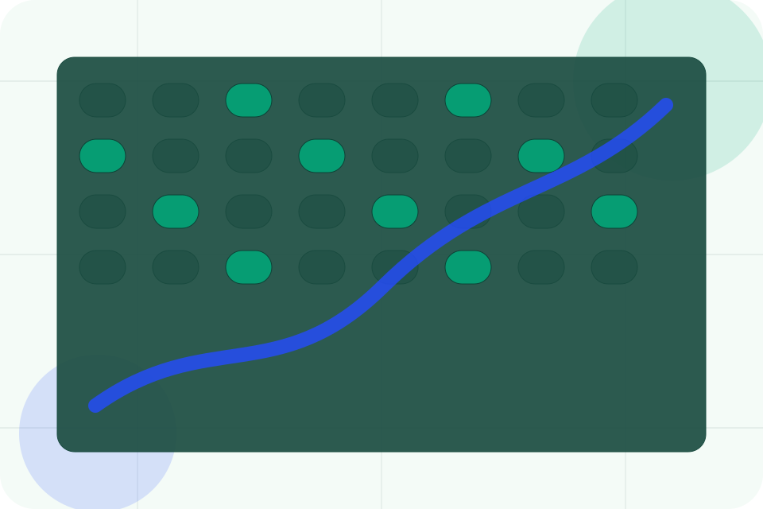
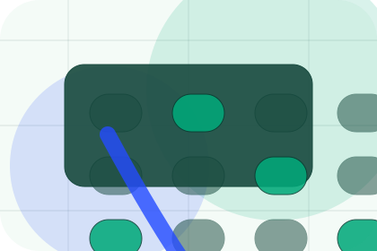
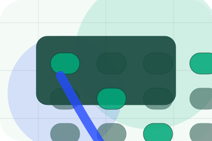
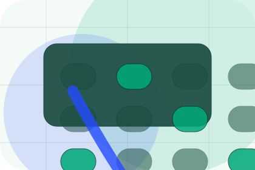
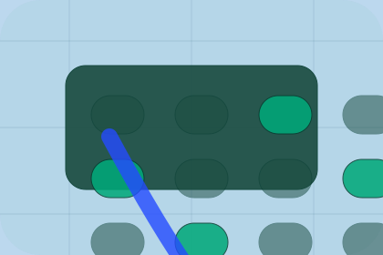

Start
How visitors begin this route and what detail is useful at the first step.
Contact / 01
Contact opens as a clear environmental decision hub: what Terra offers, who it helps, why it matters, and which route to take first.
The first screen combines positioning, proof, primary action, and fast internal navigation, so people can act immediately or compare the rest of the contact route with context.
Emissions dashboard hero
Select the closest route and Terra keeps the next step, proof, and follow-up expectation aligned with accountability and measurable change.

Contact / 02
Audit explains the operating sequence so visitors can see how the first request becomes a clear recommendation and follow-up.
The steps are written from the visitor side: what they do first, what Terra clarifies, what they receive, and how support continues.
Book Audit
How visitors begin this route and what detail is useful at the first step.

What Terra reviews, filters, or explains before recommending the next move.

What the visitor receives afterward, including support, proof, or a handoff to the next page.
Contact / 03
Advisory introduces the people, roles, or specialist credibility behind Terra so the decision feels less anonymous.
The copy ties names, roles, credentials, or availability back to the decision on the page instead of treating profiles as decorative biographies.
Book AuditThe person, team, or specialist function connected to advisory is easy to understand.
Credentials, responsibilities, or availability are tied to the visitor's decision, not listed for decoration.
The section explains how to move from profile interest to a practical conversation or booking path.
Contact / 04
Partnership gives the proof layer for contact: standards, evidence, and reassurance that make the next decision feel grounded.
Instead of relying on vague claims, Terra presents visible standards, process cues, and proof artifacts that help environmental visitors judge fit.
Book AuditVisible proof that helps visitors believe the claims behind partnership.
The quality, safety, or operating expectation this section makes explicit.
What becomes clearer before someone decides whether to book an audit.
Contact / 05
Organisation makes the contact path concrete: what to send, how the response works, and what Terra needs before visitors book an audit.
The section reduces contact friction by naming the channel, expected detail, privacy path, and response expectation instead of dropping visitors into a generic form.
Book AuditWhat information helps Terra respond with a useful answer instead of a generic reply.
How the visitor should think about response, urgency, location, or availability.
The expected next message keeps scope, timing, and the first practical step clear.
Contact / 07
Response makes the contact path concrete: what to send, how the response works, and what Terra needs before visitors book an audit.
The section reduces contact friction by naming the channel, expected detail, privacy path, and response expectation instead of dropping visitors into a generic form.
Book AuditWhat information helps Terra respond with a useful answer instead of a generic reply.
How the visitor should think about response, urgency, location, or availability.

The expected next message keeps scope, timing, and the first practical step clear.
Contact / 08
Form makes the contact path concrete: what to send, how the response works, and what Terra needs before visitors book an audit.
The section reduces contact friction by naming the channel, expected detail, privacy path, and response expectation instead of dropping visitors into a generic form.
Book AuditTerra keeps form practical: send the key details, choose the right contact route, and know what kind of reply to expect.
Book AuditContact / 09
Submit makes the contact path concrete: what to send, how the response works, and what Terra needs before visitors book an audit.
The section reduces contact friction by naming the channel, expected detail, privacy path, and response expectation instead of dropping visitors into a generic form.
Book AuditTerra keeps submit practical: send the key details, choose the right contact route, and know what kind of reply to expect.
Book AuditContact / 10
Terra closes the contact route with a clear action, a quick reminder of the value, and a low-friction way to book an audit.
Visitors who are ready can use the primary action. Visitors who are still comparing can scan the section links, proof, and support routes before they book an audit.
Book AuditThe final block keeps the choice simple: act now, compare one more proof route, or send enough detail for a focused response.
Book Auditaccountability and measurable change
A climate-accounting site with emissions dashboards, report proof, methodology panels, and audit CTAs. Contact ends with a direct path to book an audit, plus enough context for visitors who still need to compare.

Book AuditInformation is provided for planning and should be reviewed for the final client, location, and operating rules.